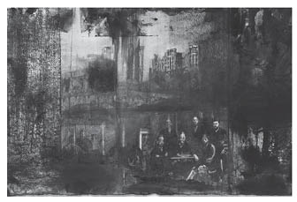

IV
Hepsinin sağlığı yerindeydi. İvan İlyiç arada bir ağzının tadının bozulduğunu, karnının sol yanında tuhaf bir rahatsızlık duyduğunu söylüyorsa da bunlar hastalık sayılmazdı. Ama terslik bu ya, karnındaki rahatsızlık arttıkça arttı; henüz bir ağrı haline gelmediyse bile, böğründe bir ağırlık hisseden İvan İlyiç’in keyfi kaçmaya başladı. Bu keyifsizliği günden güne artıyor, bir süredir ailede kurulmuş olan karşılıklı anlayış ve huzur havası gitgide bozuluyordu. Bunun üzerine karıkoca sık sık kavga etmeye başladı; evde ne dirlik kaldı ne düzen. Durumu başkalarından güçlükle saklıyorlardı.
Bu kavgaların sonunda karıkocanın hırgürsüz geçirdikleri zaman adacıkları seyreldikçe seyreldi. Bu sefer Praskovya Fyodorovna kocasının çekilmez bir adam olduğunu söylemekte hiç de haksız değildi. Her şeyi büyütme alışkanlığıyla, kocası gibi bir adama yirmi yıldır katlanmak için ancak melek olmak gerektiğini ileri sürüyordu. Kavgaların hep İvan İlyiç’ten çıktığı doğruydu. Hem de tam öğle yemeğine oturdukları sırada, çorba içmeye başlarken patlak veriyordu anlaşmazlıklar. İvan İlyiç kâh tabaklardan birinin kırılması, kâh oğlunun masaya dirseklerini dayaması, kâh kızının saç tuvaleti yüzünden hır çıkarıyordu. Üstelik hepsinde de Praskovya Fyodorovna’yı suçluyordu.
Praskovya Fyodorovna başlangıçta aynı biçimde karşılık vererek olmadık sözler söyledi. Ama baktı ki, kocası hep sofraya oturunca sağa sola çatıyor, bunun yemek yemekten ileri gelen bir hastalık olduğunu anlayarak biraz yatıştı, hemen yemeğini bitirip sesini çıkartmadan sofradan kalkmaya başladı. Kocasının karşısında susmanın yüce bir davranış olduğuna inanan Praskovya Fyodorovna, hayatını zehir eden çekilmez bir adamla evlendiği için kendisine acıyordu. Kendisine acıdıkça hıncı da zamanla arttı. Hatta kocasının ölmesini bile istemeye başladı, ama geçimleri için gereken parayı düşününce bu isteğinden vazgeçti. Parasal bakımdan ona bağlı olması, ölümünden sonra bile ondan kurtulamayacağını anlaması bu mutsuz kadını kocasına karşı daha çok kin duymaya yöneltiyor, kinini saklayıp dertlerini içine attıkça öfkesi artıyordu.
Bir gün İvan İlyiç’in gerçekten haksız olduğu böyle bir kavga sonunda, İvan İlyiç sinirlerinin çok bozuk olduğunu, ama bütün bunların rahatsızlığından ileri geldiğini söyledi. Bunun üzerine karısı, hastaysa kendisini tedavi ettirmesini, bunun için de hemen ünlü bir doktora görünmesini salık verdi.
O da ünlü doktora muayeneye gitti. Her şey beklediği gibi çıktı, zaten bundan başkası da olamazdı. Sıra beklemesi, doktorun –mahkemedeyken kendisinin de takındığı– yapmacık tavırlar takınarak şurasını burasını vurup dinlemesi, yanıtı önceden hazır, hiç gereği olmayan sorular sorması, “Siz kendinizi bize bırakın, gerisini düşünmeyin” dercesine çalım satması –ülkemizde kendinizi birilerinin eline bırakırsanız, hakkınızda en iyisinin düşünüleceğinden kuşkunuz olmasın tavrı– mahkemelerde onların yaptıklarının aynısıydı. İvan İlyiç’in mahkemede sanıklar karşısında takındığı tavrı, şimdi de ünlü doktor ona karşı sergiliyordu.
Doktor, “Şunlar şunlar sizde şöyle bir hastalığın olduğunu gösteriyor, ama falanın falanın incelenmesi bu durumu doğrulamazsa sizde filan hastalıkların bulunduğunu düşünmek gerekiyor,” diyordu. Oysa İvan İlyiç için asıl sorun, hastalığın tehlikeli olup olmadığıydı. Ama doktor bu yersiz sorunun yanıtından hep kaçıyordu. Ona göre boş bir soruydu bu, üstünde kafa yormaya bile değmezdi. Asıl sorun, bütün olasılıkları dikkate almaktı; böbrek kayması mıydı, midesinde ülser mi vardı; yoksa körbağırsak mı tıkanmıştı?.. İvan İlyiç’le bu konuları inceden inceye gözden geçirerek körbağırsak tıkanması yönünde başarılı bir karara varan doktor, idrar tahlili sonunda eline yeni kanıtlar geçince durumu bir daha inceleyeceğini söyledi. İvan İlyiç de sanıkların suçluluk durumunu aynen bu şekilde, hem de binlerce kez başarılı bir biçimde karara bağlamıştı. Karşısındaki kendi sanığına cakayla, üstelik neşeli gözlerle bakan doktor da aynı onun yaptığı gibi, kesin kararını vermiş bulunuyordu. İvan İlyiç doktorun kararından durumun hiç de iyi olmadığını, ama doktor başta olmak üzere kimsenin buna aldırış etmediğini anladı. Bunu anlayınca büyük bir şaşkınlığa düşerek kendisine acımaya, böyle önemli bir konuda ilgisiz kalan doktoruna kin duymaya başladı.
Ama öfkelendiğini ona sezdirmeden ayağa kalktı, masasının üzerine vizite ücretini koydu, içini çekerek, “Biz hastalar mutlaka çok yersiz sorular sorarız,” dedi. “Benim hastalığım nasıl bir şey? Önemli mi, değil mi, lütfen söyler misiniz?”
Doktor, gözlüğünün üzerinden tek gözüyle ona sert sert baktı. Sanki bu bakışıyla, “Bak sanık, sorularınızla sınırı zorlamaya kalkarsanız ben de sizi duruşma salonundan atmak zorunda kalacağım!..” demek istiyor gibiydi.
“Size uygun bulduğum kadarını söyledim. İleriki incelemeler bizi daha çok aydınlatacak.”
Doktor böyle söyleyerek İvan İlyiç’i selamladı. İvan İlyiç ağır ağır dışarı çıktı, içinde büyük bir sıkıntıyla kızağa bindi, evine yollandı. Yol boyunca doktorun söylemiş olduğu sözleri bir bir aklından geçiriyor, anlamını pek bilmediği çetrefil bilimsel terimleri basit konuşma diline çevirerek hastalığını çıkarmaya çalışıyordu. Durumu kötü müydü, çok mu kötüydü, yoksa önemli bir şeyi yok muydu?.. Doktorun tavırlarına, konuşmalarına bakılırsa hiç de iç açıcı bir durumu yoktu.
Sokaklarda ona her şey hüzünlü görünüyordu. Arabacılar, evler, gelip geçenler, dükkânlar, hepsi birden derin bir hüzne gömülmüş gibiydi. Böğründe bir an olsun kesilmeyen, kunt, iğne gibi batan ağrı doktorun belirsiz sözleriyle birleşince bambaşka bir anlam kazanıyordu. İçine düşen yeni bir korkuyla İvan İlyiç ağrılarını dinlemeye başladı.

Sokaklarda ona her şey hüzünlü görünüyordu.
Arabacılar, evler, gelip geçenler, dükkânlar, hepsi
birden derin bir hüzne gömülmüş gibiydi.
Eve gelince olanı biteni karısına anlattı. Kadın kulak kesilmiş dinliyordu. Ama daha konuşmasının yarısında, başında şapkasıyla kızı içeri girdi: Annesiyle bir yere gideceklerdi. Kız kendini zorlayarak, babasının anlattığı can sıkıcı öyküyü dinlemek için sandalyeye ilişti. Ama biraz sonra dayanamayıp kalktı, bunun üzerine karısı da İvan İlyiç’i dinlemekten vazgeçti.
“Eh, bu duruma çok sevindim. Bak, gör işte, ilaçlarını düzenli almayı ihmal etme. Reçeteni ver, Gerasim’i eczaneye göndereyim.”
Karısı böyle diyerek giyinmek için odasına gitti. Henüz derin bir soluk bile alamayan İvan İlyiç, karısı çıkınca derin derin içini çekti.
“Ne diyelim?.. Belki de sandığım kadar korkulacak bir şey yok.”
İlaçlarını almaya, doktorun söylediklerini eksiksiz yapmaya başladı. Ama idrar tahlilinden sonra doktorun ilk söyledikleri geçerliliğini yitirdi. Gerek tahlilde, gerekse bundan sonra yapılan incelemelerde birtakım değişiklikler, belki de anlaşılmazlıklar ortaya çıktı. İvan İlyiç bir türlü doktorla görüşemiyordu. Yapılanlar, doktorun ona açıkladığı durumla taban tabana zıttı. Ya doktor bir şeyler daha eklemeyi unutmuş, ya yalan söylemiş ya da ondan bazı şeyleri gizlemişti.
O gene de söylenenleri aksatmadan yapıyor, ilk zamanlar bundan büyük bir rahatlık duyuyordu. Doktora muayene olalı beri İvan İlyiç’in başlıca uğraşı, sağlığını koruması için doktorun söylediklerini harfi harfine uygulamak, ilaçlarını almak ve bedenini günden güne kemiren ağrılarına kulak vermek olmuştu. Çevresindeki insanların hastalıkları, sağlık durumları, onun en çok ilgi duyduğu konular arasına girdi. Yanında birilerinin hastalığından, ölümünden, iyileşmesinden, hele hele kendisininkine benzeyen bir hastalıktan söz edilmeye görsün, hemen dikkat kesiliyor, heyecanını belli etmeden sorup soruşturuyor, durumu kendi hastalığıyla kıyaslıyordu.
Ama ağrıları bir türlü azalmak bilmiyordu. Gene de, İvan İlyiç, durumunun daha iyi olduğunu kendine telkin etmek için elinden ne gelirse yapıyordu. Herhangi bir şeyden heyecanlanmadığı sürece de kendisini aldatabilmesi kolaydı. Ama karısıyla kavga edecek olsa, görevinde bir başarısızlığa uğrasa, vint oyununda eline kötü kâğıt gelse, hastalığının sıkıntısı olanca ağırlığıyla hemen üzerine çöküyordu. Eskiden olsa bu başarısızlıklara dayanır, kötü günlerin geçip iyi günlerin geleceğine yönelik bir güvenle dişini sıkardı. Ama şimdi her türlü aksaklık elini kolunu bağlayıp onu umutsuzluğa sürüklüyordu.
İşlerin böylesine ters gittiği zamanlarda kendi kendine, “Doktorun söylediklerini yapmaya yeni başlamıştım, ilacın da yararını görüyordum. Nereden çıktı şu mendebur durum?” diye söylenip duruyordu... Karşısına çıkan bu tersliklere, başının belası insanlara hırslanıp öfkeleniyor, üstelik bu öfkenin onu yiyip bitirdiğini biliyordu, ama kendisini bundan kurtarmaya gücü yetmiyordu bir türlü. İnsanlara, çevresinde olup bitenlere kızdıkça hastalığının artacağını, bu yüzden hiçbir şeye aldırış etmemesi gerektiğini kabul ettiği halde tam tersini yapıyordu. Huzurun, sağlığına çok iyi geldiğini bildiği için her yerde onu arıyor, huzurunu kaçıran en ufak olayda ise zıvanadan çıkıyordu.
Tıp kitapları okuması, başka doktorlara başvurması ise aslında kendisine yaptığı en büyük kötülüktü. Günden güne kötüleşmesi öyle yavaş seyrediyordu ki, bir gün öncesiyle karşılaştırınca aradaki ufak fark kendisini aldatmasına engel olmuyordu. Ama doktorlara gittiği zaman durumun kötüleştiğini, hem de yıldırım hızıyla kötüleştiğini düşünmeye başlıyordu. Bütün bunlara karşın doktorların eşiğini aşındırmaktan geri kalmıyordu.
O ay başka bir doktora gitti, o da ilkinin söylediğinin aynısını söyledi, yalnız konuyu biraz değişik bir açıdan inceledi. İkinci ünlü doktorla konuşması İvan İlyiç’in kuşkularını, korkusunu artırmaktan başka bir işe yaramadı. Bu doktor, hastalığına büsbütün değişik bir tanı koyarak ona iyileşeceğini söyledi, ama sorduğu sorularla, birtakım varsayımlarla adamcağızın kafasını iyice karıştırdı. Bu arada, İvan İlyiç’in danıştığı üçüncü bir hekim onda başka bir hastalık bularak birtakım değişik ilaçlar verdi. İvan İlyiç bir hafta kadar bu ilaçları aldı. Ama bu sürenin sonunda ağrılarında bir hafifleme duymadığı, üstelik hem önceki doktorlara hem de sonuncusuna güvenini yitirdiği için daha büyük bir umutsuzluğa kapıldı.
Bir gün, tanıdığı bir kadın, ona aziz resimleriyle tedavi yapılan bir yerden söz etti. İvan İlyiç kadını can kulağıyla dinlediğini, böyle bir şeyin olabileceğine inandığını neden sonra fark ederek büyük bir korkuya kapıldı. Kendi kendine şöyle söylüyordu: “Ben manen böylesine zayıfladım mı? Olacak şey değil! Bırak bu saçmalıkları şimdi... Kendini kuruntuya kaptırmadan bir doktor seç de sıkı bir tedavi yolunu tut! Tamam, bu iş burada biter! Düşündüğüm gibi yapacağım. Kafamı fazla yormadan yaza kadar çok iyi tedavi olacağım. O zaman neyin nasıl olduğunu görürüz, tereddüte yer yok artık!..”
Bunları söylemek kolay olsa da yapmak olanaksızdı. Bu arada ağrıları gittikçe artarak böğrüne saplandı kaldı, çok da canını sıkıyordu üstelik. Ağzının tadı da iyice kaçmıştı. Ona ağzı çok kötü kokuyormuş gibi geliyordu. İştahı azalmış, güçten kuvvetten düşmüştü. Artık kendini kandırması imkânsızdı. Başına şimdiye dek karşılaşmadığı, yepyeni, korkunç mu korkunç, çok önemli bir şeyin geldiğini anlıyordu şimdi. İşin kötüsü, bunu yalnız kendisi biliyordu; çevresindekilerse ya anlamadıkları ya da anlamak istemedikleri için hiçbir şey olmamış gibi davranıyorlardı. Onu en çok üzen de buydu işte! Ev halkı, özellikle karısı ile kızı her zamankinden daha sık gezintilere çıkarken İvan İlyiç’i bir türlü anlamıyorlar, asık suratlı ve evhamlı olması onun suçuymuş gibi, için için zavallı adama kızıyorlardı. Her ne kadar bunu ona sezdirmemeye çalışıyorlarsa da İvan İlyiç’in gözünden hiçbir şey kaçmıyordu. Evdekilere ayak bağı olduğunu, karısının, hastalığına karşı değişmez bir tavır takınarak onun yaptıklarına, söylediklerine pek kulak asmadığını görüyordu.
İşte karısının ona nasıl davrandığına bir örnek: Praskovya Fyodorovna, ahbaplarına, “Biliyor musunuz,” diyordu, “bütün hastalar gibi İvan İlyiç de doktorların söylediklerini tamı tamına yapmaz. Bir gün damlalarını alır, izin verilen yemekleri yer, zamanında yatar; ama gözünü biraz ondan uzaklaştıracak olsan, bir de bakmışsın ilacını içmeyi unutmuş, mersinbalığı yemiş (yemesi yasaktı), vint masası başında gecenin saat birine kadar oturmuş.”
Canı sıkılan İvan İlyiç, “Bunu ne zaman gördün?” diye bağırıyordu. “Bir kere Pyotr İvanoviç’lerde oynadım. Ne yapayım! Nasıl olsa ağrıdan uyuyamayacaktım...”
“Her neyse, sen bu gidişle iyileşemezsin. Bizi de boşuna üzüyorsun.”
Praskovya Fyodorovna’nın, kocasının hastalığıyla ilgili olarak, gerek başkalarının yanında, gerekse yalnızken ona karşı takındığı tavrın özü, hastalığında asıl kabahatin onun kendisinde olduğu, salt karısına kötülük yapmak için başına bu hastalığı çıkardığı yolundaydı. İvan İlyiç, karısının isteyerek öyle davranmadığını biliyordu, ama bunu bilmek ağrılarını dindirmezdi ki!..
İvan İlyiç adliyede de kendisine karşı tuhaf davranıldığını fark ediyor ya da öyle sanıyordu. Ona hep, fazla bir zaman geçmeden yeri boşalacak adam gözüyle bakıyorlarmış gibi geliyordu. Ya da arkadaşları, ummadığı bir zamanda başına gelen ve günden güne onu kemiren, kim bilir sonunda nerelere kadar götürecek korkunç derdini şaka konusu yaparak kuruntularıyla alay etmeye başlıyorlardı. Kıvraklığı, şakacılığı, ölçülü davranışlarıyla on yıl öncesinin İvan İlyiç’ini andıran Schwarz, hepsinden daha çok damarına basıyordu.
Arkadaşları geliyor, oyun oynamak için masaya oturuyorlardı. Gıcır gıcır kâğıtlar dağıtılıyor, karolar karoların yanına konuyordu: Elinde tam yedi karo oluyordu. Ortağı oyunu açıyor, sonra iki karoya yükseltiyordu. Daha ne isterdi? Şlem diyebileceği için sevinmesi, hop oturup hop kalkması gerekmez mi?.. Ama hayır, birden böğründeki ince sızıyı, ağzındaki tatsızlığı hissediyor, şlem dediğine de diyeceğine de bin pişman oluyordu.
Başını kaldırıp oyun ortağı Mihail Mihayloviç’e bakıyordu. Büyük bir heyecan ve sevinçle elini masaya vuran ortağı, kazançlarını kendisi almama inceliğini göstererek, pulları toplama zevkini İvan İlyiç’e bırakıyor, kolunu fazla ileri uzatma zahmetine girmemesi için pulları onun önüne doğru itiyordu. İvan İlyiç, “Yoksa elimi ileri uzatamayacak kadar kuvvetten düştüğümü mü sanıyor?” diye düşünüyordu. Böyle düşünürken bir sonraki oyunda hangi kâğıdın koz olduğunu unutarak gereksiz yere koz istiyor ve üç içeri giriyordu. Hepsinden korkuncu da Mihail Mihayloviç’in çok üzüldüğünü gördüğü halde kendisinin buna pek aldırmamasıydı. Niçin aldırmadığını düşünmek ise onu öldürüyordu.
İvan İlyiç’in kötüleştiğini gören arkadaşları, “Yoruldunuzsa bırakalım... Siz biraz dinlenin,” diyorlardı.
Yorulmak mı? Hayır, hiç yorulmamıştı, partiyi tamamlamaları gerekirdi. Herkesin suratı bir karış asıktı, kimseden çıt çıkmıyordu. İvan İlyiç, arkadaşlarının suratsızlığına kendisinin neden olduğunu hissediyor, ama onları neşelendirmek içinden gelmiyordu. Birlikte akşam yemeği yedikten sonra herkes evine dağılıyordu. Yalnız kalan İvan İlyiç yaşamının zehirlendiğini, üstelik şimdi de başkalarınınkini zehirlemeye başladığını, bunun da azalacağı yerde günden güne artarak bütün benliğini sardığını hissediyordu.
Bu düşüncelerle, böğründeki ağrı ve içindeki korkuyla yatağa yatmak, çoğu zaman ağrıdan gözünü kırpmamak demekti... Ama sabahleyin gene kalkmak, giyinmek, mahkemeye gitmek, yazıp çizmek, konuşmak gerekiyordu; eğer gitmeyip evde kalırsa, her biri başlı başına birer ıstırap kaynağı olan yirmi dört saatini evde geçirmek zorundaydı. Hem de kendisini anlayıp yakınlık gösterecek bir kişi bile bulamadan, ölümün eşiğinde tek başına yaşayarak...